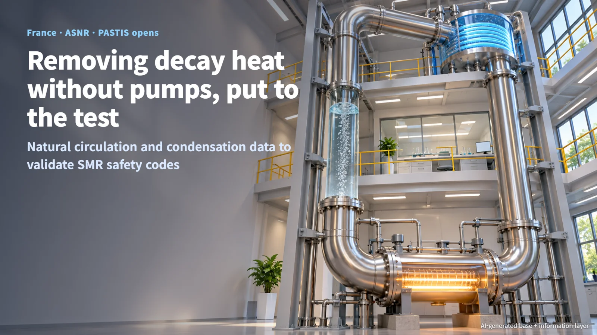
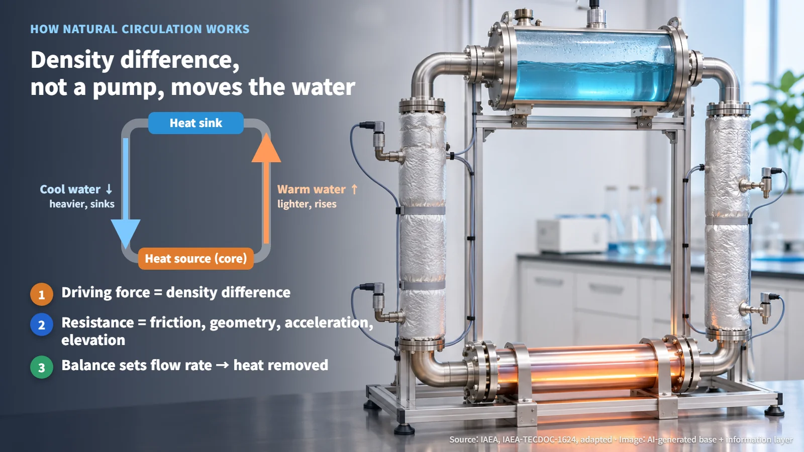
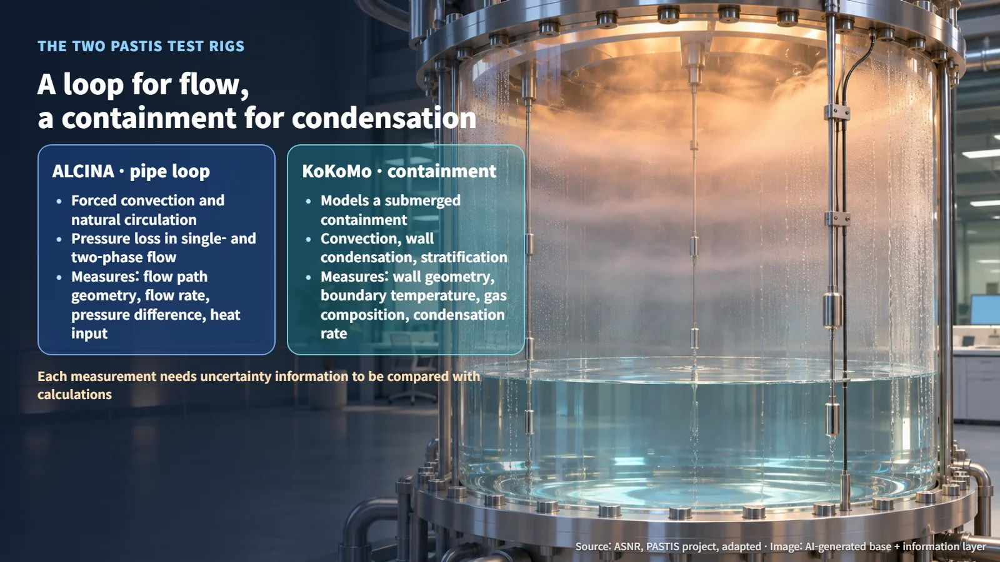
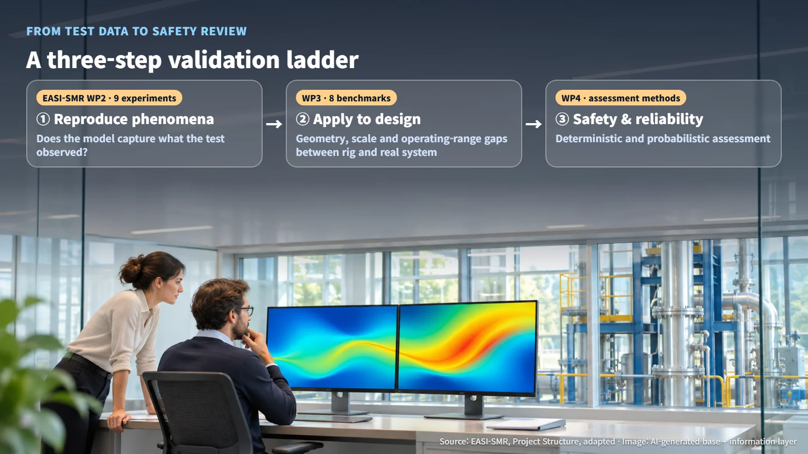

France · ASNR · Passive Safety
How Do You Prove a Pumpless SMR Safety System Works? France Opens the PASTIS Test Facility
ASNR opened PASTIS at Cadarache to generate natural-circulation and condensation data for validating the analysis codes behind pumpless SMR safety systems.
A reactor keeps producing heat after it shuts down. This decay heat comes from the fuel itself, and removing it reliably, even during an accident, sits at the heart of nuclear safety. The passive safety systems in small modular reactors (SMRs) do this job with natural phenomena instead of electricity and pumps. So how does a regulator confirm that a design can cool itself without a single pump running?
On November 9, 2026, France's nuclear safety and radiation protection authority, ASNR, announced that it had opened the PASTIS research facility at Cadarache on November 4. PASTIS stands for Passive Systems Thermalhydraulic Investigations for Safety, a project that studies how decay heat is removed passively from light water reactors. Its purpose is to build the scientific basis for independently assessing the passive safety systems of innovative reactors and SMRs. The French government supported it with EUR 9 million through the France 2030 program.

How Heat Moves Without a Pump: What Drives Natural Circulation
Heat a pot of water and the hot water rises while the cooler water sinks. The International Atomic Energy Agency (IAEA) describes natural circulation as flow that arises in a gravity field when a heat source and a heat sink are connected by a fluid. In a reactor, water warmed by the hot core (the heat source) rises, gives up its heat at an elevated heat sink (the cold side that carries the heat away), and flows back down, forming a loop. A pump pushes water with the force of a motor; natural circulation uses the density difference within the fluid as its driving force.
The IAEA breaks down the pressure drop that resists this flow (the pressure lost as fluid moves) into friction, changes in flow path geometry, area and direction, acceleration, and elevation effects. The flow rate settles where the driving force from the density difference balances the resistance of the piping, and that flow rate determines how much heat the system can remove. Confirming passive safety performance therefore comes down to measuring "how much flows" across different pipe geometries, single-phase and two-phase conditions, flow directions, and steady and transient states, then checking those measurements against calculations.

Pipes and Containment: The Two PASTIS Test Rigs
ALCINA (AnaLyse de la CIrculation NAturelle) is a thermal-hydraulic loop. It investigates the pressure losses that occur in forced convection and natural circulation, in both single-phase and two-phase flow. Single-phase means only water is flowing; two-phase means water and steam flow together.
KoKoMo (COndensation in a COntainment MOdel facility) simulates a submerged containment and studies the combined effects of convection, wall condensation and stratification. Wall condensation is the process in which steam touches a cold wall, turns back into water and hands over its heat. Stratification is the layering of temperature and gas composition inside a space. The IAEA phenomena list treats the effect of non-condensable gases (gases such as air that stay gaseous when cooled) on condensation heat transfer, and low-velocity stratification in large volumes, as separate items. Explaining heat transfer across a whole space requires looking at gas composition, temperature distribution and wall conditions together, rather than a single average temperature.
| Rig | What it simulates | Key phenomena | Measurements needed to validate models | |---|---|---|---| | ALCINA | Piping loop | Forced and natural circulation, single- and two-phase pressure loss | Flow path geometry, flow rate and pressure difference, heat input, flow regime | | KoKoMo | Submerged containment | Convection, wall condensation, stratification | Volume and wall geometry, boundary temperatures, gas composition and temperature distribution, condensation rate |
(Source: ASNR, "PASTIS project"; IAEA, IAEA-TECDOC-1624, adapted)
Each measurement needs uncertainty information attached before it can be compared with a calculation. PASTIS's role is to measure precisely both the flow that carries heat and the condensation that takes it in.

From Test Data to Safety Review: Three Steps of Validation
Test results pass through three steps before they can support a safety judgment. The first is reproducing the phenomena: checking that a computer model captures what was observed in the test. The second is applying the results to a design: assessing the differences in geometry, size (scale) and operating range between a test rig and an actual system. The third is safety and reliability assessment: judging whether the system performs its function and under what conditions it could fail.
The plan of the European joint project EASI-SMR (Ensuring Assessment of Safety Innovation for SMR) follows this ladder. Work package 2 plans nine experiments covering the heat removal path from the core to the ultimate heat sink. Work package 3 plans eight benchmarks that use those experimental data to evaluate code predictive capability, modeling best practices and development needs. Building on that, work package 4 plans to develop and validate deterministic and probabilistic safety assessment methods for passive systems. A deterministic assessment calculates whether a function is fulfilled under defined accident conditions; a probabilistic assessment addresses the likelihood of failure and combinations of events. Finland's LUT University also takes part in the project's passive system experiments and code validation, and is building test facilities related to the LDR-50 and NUWARD designs.
ASNR works with EDF's research and development organization, EASI-SMR and other partners, and feeds what it learns into its analysis codes, including CATHARE for normal and accident conditions and ASTEC for severe accidents. With this opening, the testing foundation for the first step is in place. The safety of each individual SMR is evaluated in that design's licensing review, using data of this kind as evidence.

What to Watch After the Opening
According to ASNR's project description, PASTIS plans to carry out experiments, thermal-hydraulic model development, and validation of the CATHARE and ASTEC codes and computational fluid dynamics (CFD) codes starting in 2026. The detailed operating ranges, measurement uncertainties and performance acceptance criteria have not yet been published.
The documents worth watching are the list of test conditions (the test matrix) and the published data, validation results comparing code predictions with test values, and the outcomes of the EASI-SMR benchmarks.
Confidence in a safety system without pumps is built from physical principles, measured values, and the validation process that connects the two. When the first PASTIS test data are released, those numbers will show how that confidence is taking shape.